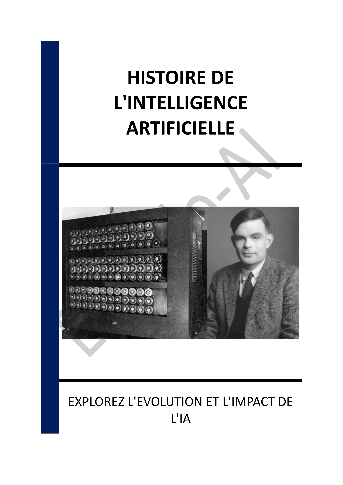

- INTRODUCTION - L'ESSOR ET L'IMPACT DE L'INTELLIGENCE ARTIFICIELLE
- Chapitre 1 - LES ORIGINES DE L'INTELLIGENCE ARTIFICIELLE : CONCEPTS ET PIONNIERS
- Chapitre 2 - LES SYSTÈMES SYMBOLIQUES ET LE BON VIEUX TEMPS DE L'IA
- Chapitre 3 - LES HIVERS DE L'INTELLIGENCE ARTIFICIELLE : DÉSILLUSION ET RÉFLEXION
- Chapitre 4 - LE RENOUVEAU DE L'IA : RÉSEAUX DE NEURONES ET APPRENTISSAGE AUTOMATIQUE
- Chapitre 5 - L'ÉMERGENCE DU DEEP LEARNING : RÉVOLUTION TECHNOLOGIQUE
- Chapitre 6 - APPLICATIONS ACTUELLES DE L'IA : TRANSFORMATIONS DANS DIVERS SECTEURS
- Chapitre 7 - LES ENJEUX ÉTHIQUES DE L'IA : DÉFIS À RELEVER
- Chapitre 8 - LE RÔLE DE L'IA DANS LES ARTS ET LA CRÉATIVITÉ
- CONCLUSION - VERS UN AVENIR MODELÉ PAR L'INTELLIGENCE ARTIFICIELLE
📄 Consulter les annexes du livre
Mentions légales